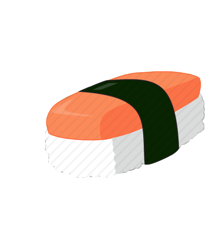

 SushiMe
{{restaurant.name}}
{{restaurant.distance | number:"0"}}m
{{restaurant.location.display_address | join:', ' }}
{{restaurant.rating}} {{restaurant.review_count}}
{{restaurant.distance | number:"0"}}m
{{restaurant.location.display_address | join:', ' }}
{{restaurant.rating}} {{restaurant.review_count}}